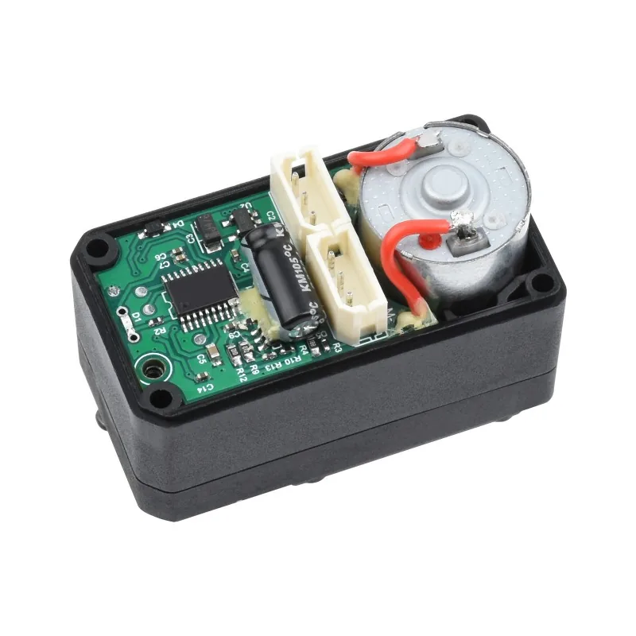
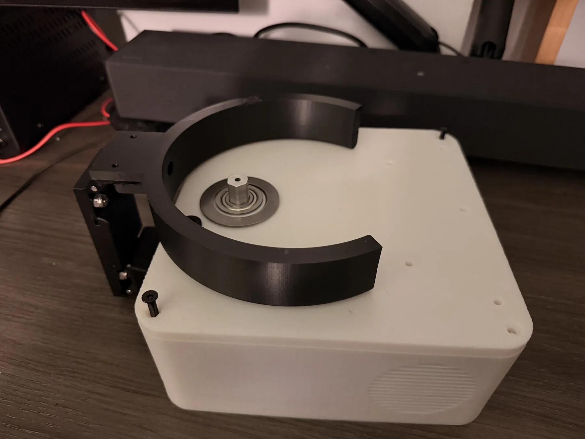
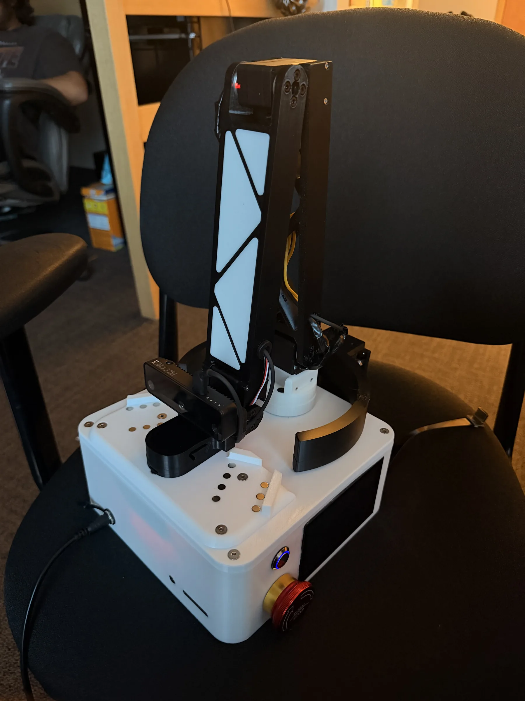
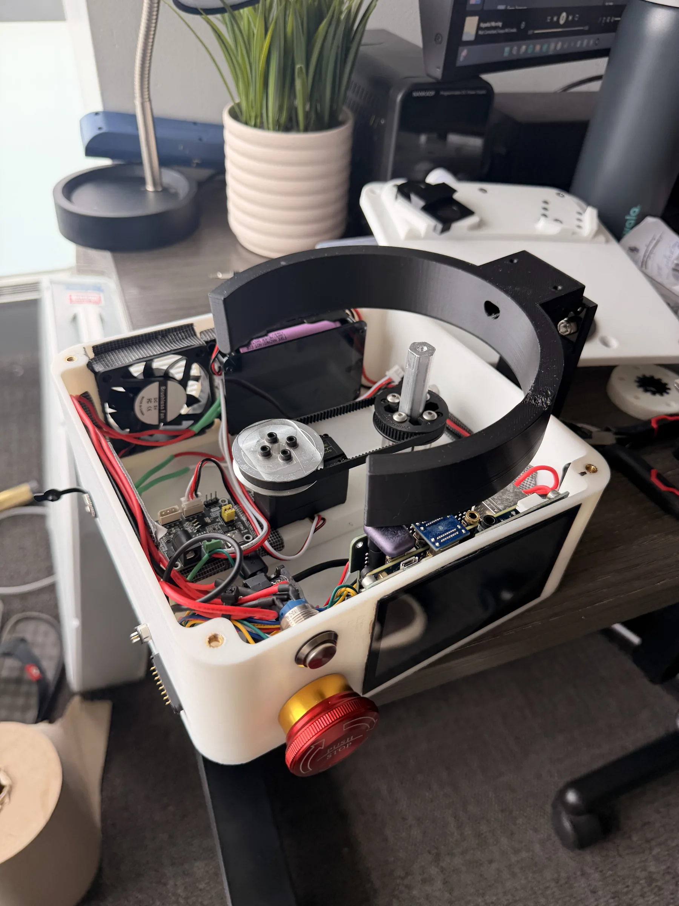
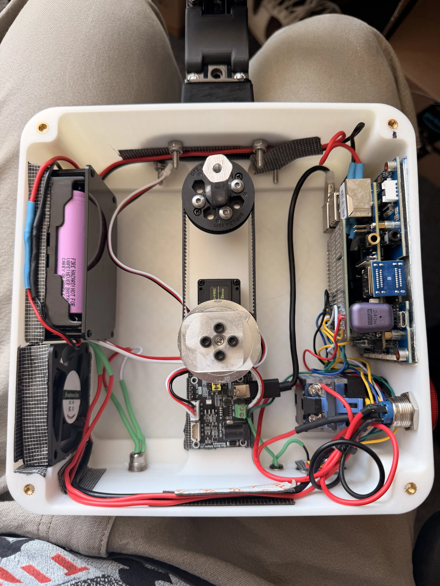

Munchkin is a robotic feeding device for people with limited upper-body mobility. A depth camera and MediaPipe track the user's mouth, and a 4-DOF arm brings each bite to it. The V1 parts cost is under $600 and the design is open-source.
The tracking puts the food where the user's mouth actually is, and open/closed detection lets the user set the pace. Olin College funded the project with a SAG Grant for prototyping and a SEED Grant for continued development. We have since formed Munchkin LLC, licensed in Massachusetts, to run structured user testing at Briarwood Rehabilitation & Healthcare Center.
V3, in development
V3 rebuilds the system with higher-torque servos, a plate holder built into the body and a modular tool changer. User testing is planned at Briarwood in Fall 2026.
Automatic tool changer
The end effector locks and releases a fork or a spoon on its own. A swap takes under 2 seconds and needs no help from the user or a caregiver, and the device picks the utensil based on what is being served.

Higher-torque servos
30 kg·cm servos with 0.1° angular resolution, up from 15 kg·cm on V1. Smoother motion and better repeatability at the end effector.

Integrated plate holder
The plate holder is part of the device body and folds flush when not in use, so there is no separate tray to carry or set up.

Folding arm
The arm folds fully inside the body for transport and storage.

Onboard touchscreen
Feeding mode, speed and other settings are set on the device. No phone or laptop is needed.

Adaptive control ports
External ports accept switches, sip-and-puff controllers and similar assistive devices, for partial or full control depending on what each user can operate.
Food recognition (planned)
A camera over the plate to identify what is on it, track portion sizes and estimate nutrition. Not built yet.
V1 design decisions
We looked at several layouts before settling on the final one: a stationary arm on a rotating base, a gantry, and a jointed arm like a small industrial robot.
Arm configuration
- Options: 4-DOF articulated arm, 4-DOF SCARA, 2-DOF pan-tilt.
- Choice: 4-DOF articulated arm with base rotation, shoulder, elbow and wrist joints.
- Why: the largest workspace and the most natural approach path. The wrist joint (which a 3-DOF arm lacks) keeps the utensil level whatever the approach angle, which matters for not spilling food. It costs one more servo and more control complexity than the simpler options.
Mouth tracking
- Options: MediaPipe Face Mesh, OpenCV Haar cascades, a custom CNN, depth camera only.
- Choice: MediaPipe Face Mesh with an Intel RealSense depth camera.
- Why: MediaPipe gives 468 facial landmarks at 30 fps on a Raspberry Pi 4, and the RealSense depth frame turns the 2D mouth position into a 3D target. Using a pre-trained model saved weeks of training, and the open-source code was easy to debug. Haar cascades were not accurate enough, and a custom CNN would have needed a dataset we did not have.
Computing platform
- Options: Raspberry Pi, Arduino with OpenCV on a laptop, Jetson Nano, microcontroller with cloud processing.
- Choice: Raspberry Pi 4B (4 GB RAM).
- Why: enough compute at the right price ($62 against $200+ for a Jetson). The quad-core ARM runs MediaPipe at 30 fps while also handling servo control and safety monitoring, and it has USB 3.0 for the camera and GPIO for the e-stops. An Arduino cannot run the model, and cloud processing adds latency we did not want in a motion that ends at someone's face.
Latency is the reason for keeping everything on the Pi. It responds to a tracked mouth movement in about 45 ms, consistently, against a human reaction time of 200 to 300 ms. That is what lets the arm follow the mouth without visible lag.
System architecture
The V1 electronics split into three groups: inputs (a depth camera, two emergency stops and two isolated power rails), processing on the Raspberry Pi (face tracking, inverse kinematics, safety monitoring and serial servo control through a BusLinker board) and outputs (four daisy-chained serial-bus servos and the utensil end effector).
Component specifications
| Component | Role | Specs |
|---|---|---|
| Input | ||
| Intel RealSense depth camera | RGB-D camera for face detection and mouth tracking. | 1920×1080 RGB, 1280×720 depth · 30 fps · range 0.3–3 m · USB 3.0 · 3–5 W |
| E-stop (primary) | Main emergency stop, hard-wired to a Raspberry Pi GPIO pin. | Push-button · GPIO with pull-down resistor · response <10 ms |
| E-stop (shoulder mount) | Second emergency stop on a shoulder harness, within reach of the user. | Push-button · pluggable GPIO · response <10 ms |
| 5 V power supply | Rail for the computing side, isolated from motor power to keep servo noise off the Pi. | 5 V @ 5 A (25 W) · powers Pi, camera, fan |
| 9 V power supply | Rail for the servos, isolated from the computing side. | 9 V @ 3 A (27 W) · powers BusLinker and 4 servos |
| Power switch | Cuts power to the BusLinker and servos while the Pi stays up. | Toggle switch · rated 9 V 3 A |
| Processing | ||
| Raspberry Pi 4 Model B | Runs computer vision, motion control, safety monitoring and servo communication. | Quad-core ARM Cortex-A72 @ 1.5 GHz · 4 GB LPDDR4 · 5 V @ 3 A |
| MediaPipe Face Mesh | Face detection and 468-point landmark tracking for mouth position and open/closed state. | Google MediaPipe · 468 landmarks · 30 fps |
| Motion control | Inverse-kinematics solver that turns the mouth coordinate into four servo angles. | Analytical IK solver · 4 DOF · 100 Hz update |
| Safety monitor | Polls both e-stops over GPIO and pauses the arm on activation. | 2 e-stop inputs · 1000 Hz polling · response <10 ms |
| Serial control | USB-to-serial-bus link to the BusLinker, sending servo position commands. | LX-15D serial bus protocol · 115200 baud · 100 Hz update |
| Cooling fan | Keeps the Pi below 65 °C in continuous operation. | 40 × 40 mm · 5 V DC · ~2 W |
| BusLinker V2.2 | USB-to-serial-bus converter; the four LX-15D servos are daisy-chained from it. | USB 2.0 in · 4-channel serial bus out · LX-15D protocol |
| Output | ||
| Servo ID 0, base pan (joint 0) | Rotates the arm about the vertical axis. | HiWonder LX-15D · 15 kg·cm @ 9 V · 240° range |
| Servo ID 1, shoulder (joint 1) | Sets the angle of the first arm segment. | HiWonder LX-15D · 15 kg·cm @ 9 V · 240° range |
| Servo ID 2, elbow (joint 2) | Sets the angle of the second arm segment. | HiWonder LX-15D · 15 kg·cm @ 9 V · 240° range |
| Servo ID 3, wrist (joint 3) | Sets the tilt of the end effector. | HiWonder LX-15D · 15 kg·cm @ 9 V · 240° range |
| End effector, utensil holder | Holds a spoon or a fork, with a quick-release for swapping. | 3D-printed PLA · hybrid spoon/fork holder · spring-loaded release |